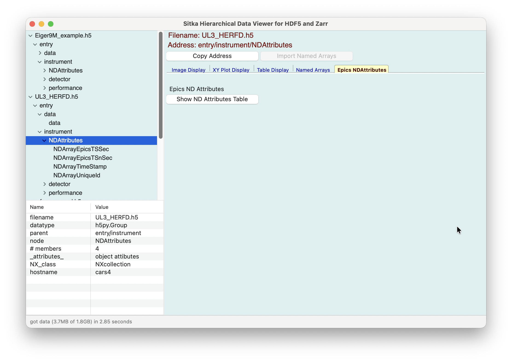
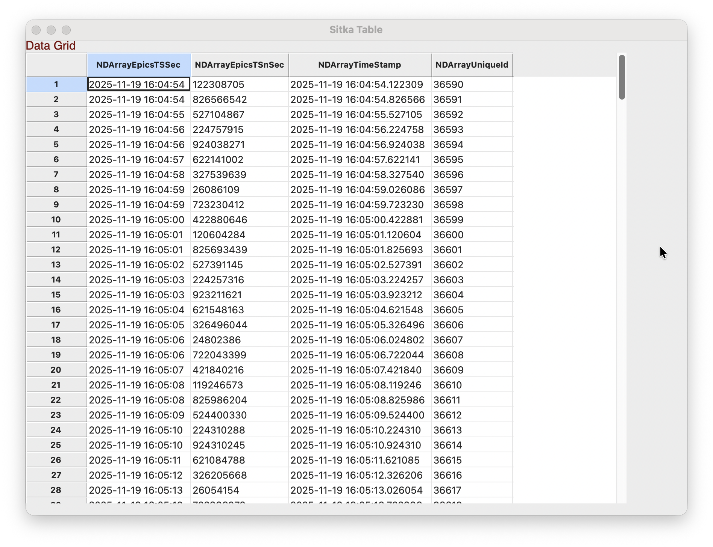
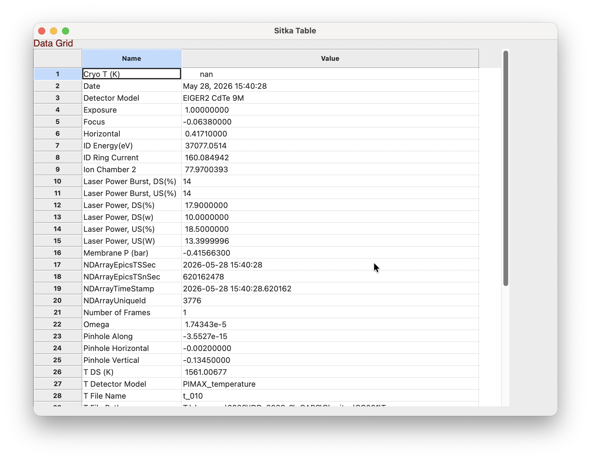

Epics areaDetector NDAttributes¶
For HDF5 Files saved by the Epics control system’s areaDetector software, Sitka will recognize that an HDF5 file has a Group with an address of entry/instrument/NDAttributes is meant to hold meta-data for that data acquisition. For the many synchrotron and user facilities using Epics and its areaDetector software, these files will be ubiquitous. Reading and extracting the metadata from these files is somewhat challenging for the novice user, as long strings may be stored as byte arrays, and times will be stored as an Epics timestamp, offset from the standard Unix timestamp by 20 years.
If the NDAttributes is recognized in an HDF5 file, Sitka will add an “Epics NDAttributes” Tab to the Notebook panels.
{kind=link}

This page has only one Button to show the attributes in the Table display.
Since the datasets in the NDAttributes group will be of uniform length (one for each “image” of the data acquisition), a table will be made containing all the datasets in this Group. If the datasets have multiple values, the table will have a column for each dataset, such as
{kind=link}

Note that timestamps have been converted to ISO-standard timestamps.
If the NDattributes have only 1 value, such as with
then the values will be displayed as key/value pairs, such as
{kind=link}

In all cases, the Table display allows the user to export the data shown into tab-separated-value files.